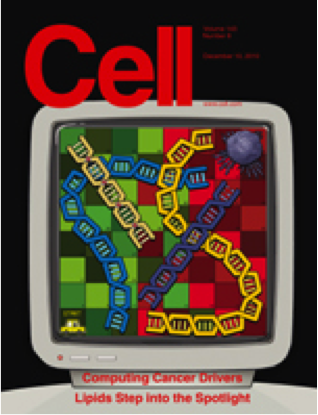
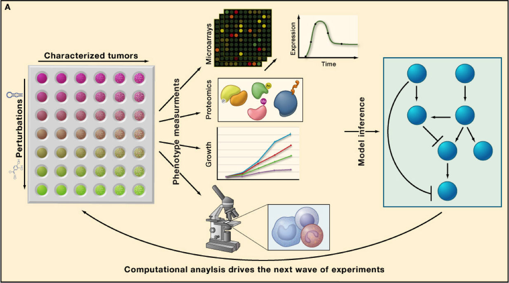
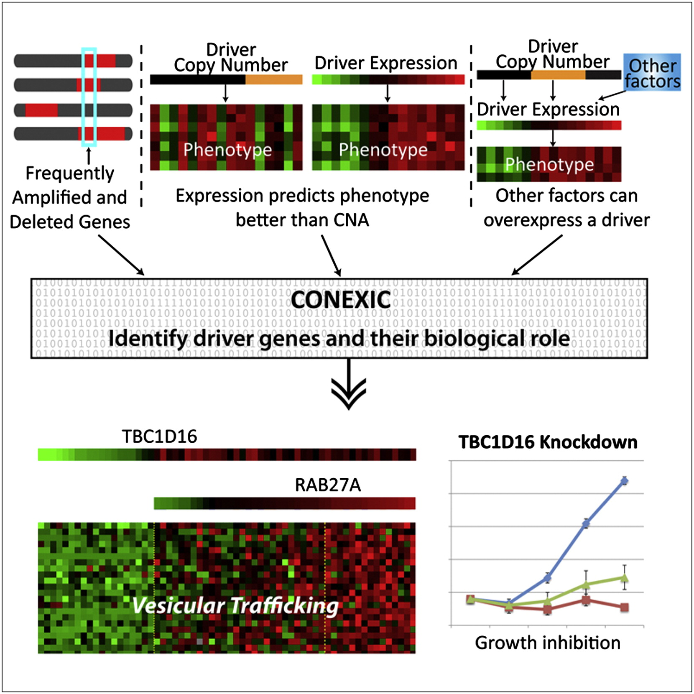
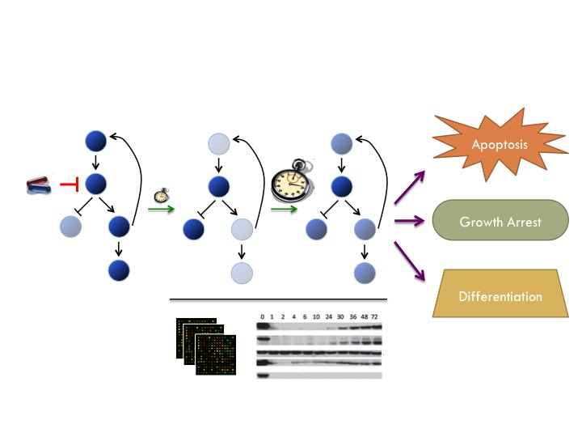

|
|
|


Cancer is an individual disease unique in how it develops and behaves in every patient. Genetic alterations give rise to cancer networks
regulation going awry in myriad ways, arming the cancer with ability to abnormally grow, metastasize and evade drugs. With the advent of
The Cancer Genome Atlas and other large-scale cancer genomics projects, genetic and genomic data in tumor samples is accumulating at astounding rates, creating a tsunami of data to mine towards a better understanding of this disease and potential therapeutic paths. Computation has emerged as a bottleneck on the path to personalized therapy, key challenges being:
- Can we identify the causal mutations driving tumor progression and drug resistance?
- Can we assemble these faulty components into functional cancer networks and understand the new cellular dynamics?
- Can we derive models that can predict the best drug regime for each individual?
We develop machine learning algorithms to infer cancer networks that elucidate the pathways and regulatory mechanisms by which cancer goes awry and suggest new pharmacological targets for this deadly malignancy in a patient specific manner. By developing models that can predict how individual tumors will respond to certain drugs and drug combinations, our goal is to develop ways to determine the best drug regime for each patient. Success in this challenge will carry cancer genomics from the diagnostic to the therapeutic realm.
|
 |
Driving Mutations Systematic characterization of cancer genomes has revealed a staggering complexity of aberrations among individuals, therefore the first step is to separate the wheat from the chaff and define what are the key alterations functionally driving cancer, and to then begin to identify their mechanisms of action and therapeutic implications. We develop novel computational approaches to do just that. The approaches we develop can be viewed as an accurate in silico screens that concurrently works across multiple genetic backgrounds and cancer phenotypes, accelerating discovery to rapidly extract the maximal value from modern genomic studies.
Our first algorithm, CONEXIC , integrates DNA copy number and gene expression to pinpoint specific drivers within large aberrant regions and provides insight into their physiological roles. We applied CONEXIC to melanoma and demonstrated that we could accurately identify the tumor dependencies and predict which pathways and biological processes these altered.
We continue to push the envelop, developing more sophisticated machine learning algorithms that integrate additional data types such as sequence mutations, epigenetics and functional shRNA screens to identify oncogenes and tumor suppressors in a tumor specific manner. Our current projects focus on the genetic determinants of drug resistance and modeling interactions between multiple genetic lesions.
|
|
 |
Cancer networks and personalized therapy
Success of targeted therapies relies on our ability to match these with the right patients. As it becomes more evident that effective treatments will require combinatorial regimes of drugs, rational therapy becomes an increasingly complex challenge. Rather than black box predictors of drug response, we take a network centric approach, building models that can identify genetic determinants of drug response, how and why these influence drug response and pinpoint additional targets that are likely to enhance sensitivity to drug. To construct such cancer networks this we take a combined experimental and computational strategy. To understand drug response, we measure use different technologies to measure the dynamics of gene and protein expression following different drug perturbations, in various genetic backgrounds. Funded by SU2C ,
we are using MAPK inhibition in melanoma as a model to derive a more general framework to model and predict patient response to drug. Our data and its analysis revealed novel cross-talk with additional pathways that are key determinants influencing the degree of apoptosis following drug treatment. The power of our approach derives from our perturbation-based design, which unveils pathway behaviors that are not apparent without perturbation. We are currently extending our efforts to understand drug response in two critical directions: (1) The role of epigenetics on drug response. (2) The role of stroma and immune system on drug response. We continue our efforts to build increasingly sophisticated models of drug response based not only on understanding which components go wrong, but also how these go wrong in each individual patient, towards improving cancer therapeutics.
|
|